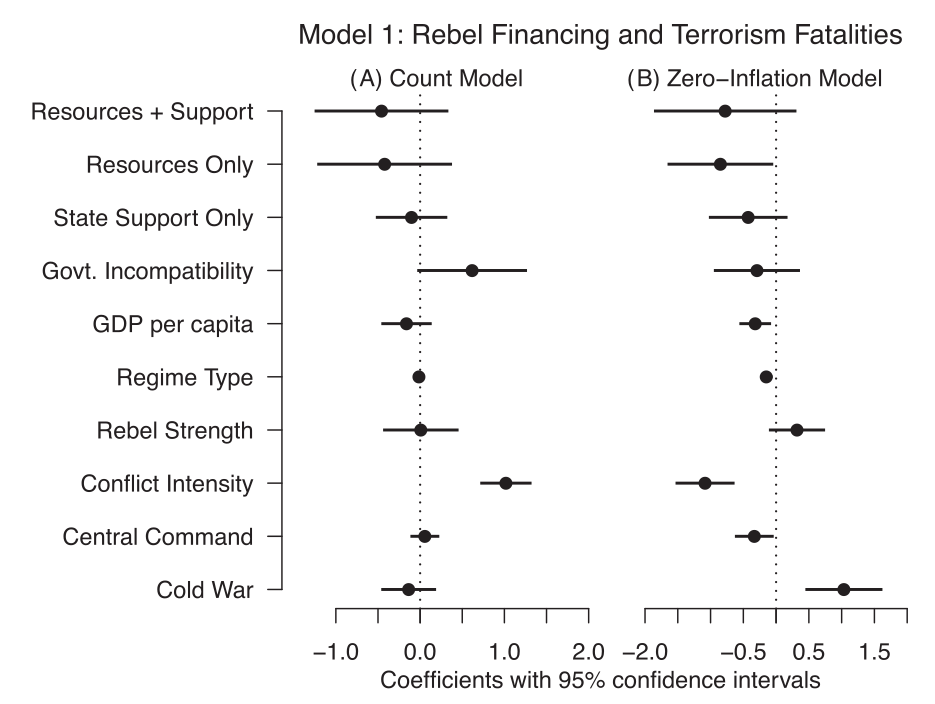

Developing our Basic Research Tools
Justin Leinaweaver (Spring 2026)
Research Tools
A bibliography manager: Zotero
Top political science journals: Google Scholar
Argument paper basics: Farrell (2010)
Designing a “good” research proposal requires:
A compelling research question,
A foundation in the academic literature, and
A clear theoretical story to test
How to Read a (Quantitative) Journal Article (Krippner 2000)

How to Read a (Quantitative) Journal Article (Krippner 2000)
The answers SHOULD BE in the text
Practice, practice, practice
How to Read Political Science (Green 2013)
Title, Headings, Abstract
Skim for Signposts
Read Strategically
Review
How to Read Political Science (amended)
Carefully read the abstract, introduction and conclusion
Develop an outline of the article (bullets and p#):
The research question (why important?)
The key concepts (any debate?)
The main argument (key mechanisms?)
The data (sources and cases?)
The conclusions (how confident are they?)
Evaluate: What are the strongest and weakest parts of the paper? What knowledge has been created?
The research question (why important?)
The key concepts (any debate?)
The main argument (key mechanisms?)
The data (sources and cases?)
The conclusions (how confident are they?)
What are the strengths and weaknesses of this research paper?
What knowledge has been created by this paper?
Xu, X. (2021). To Repress or to Co‐opt? Authoritarian Control in the Age of Digital Surveillance. American Journal of Political Science. 65(2), 309–325.
Read the abstract, introduction and conclusion
Unpack the article and submit to Canvas